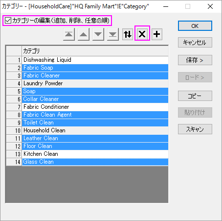
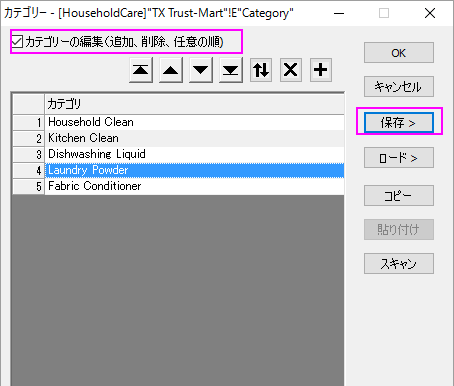
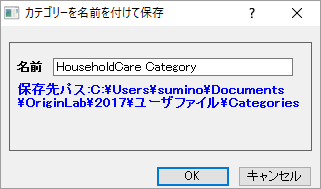
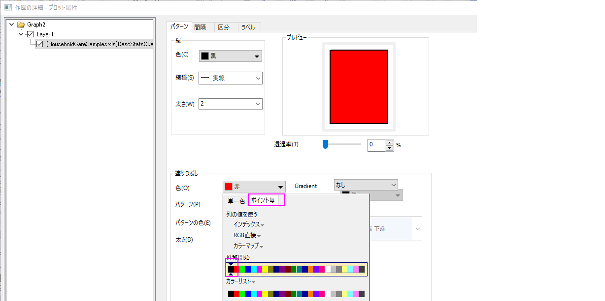
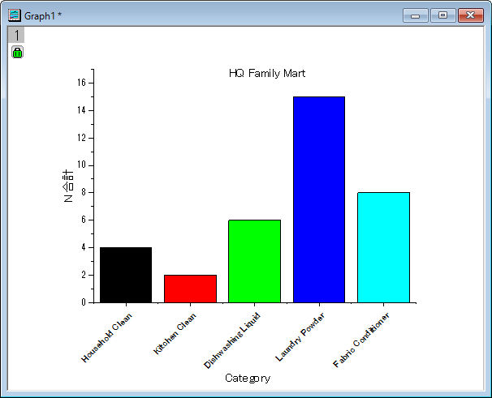
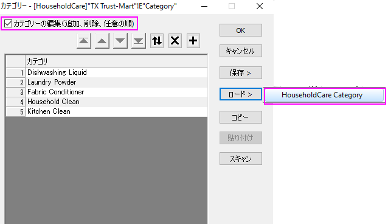
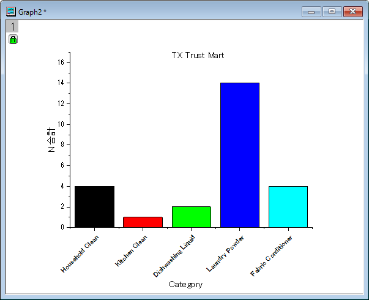

カテゴリー値と共有
Categorical-Values-Ordering
サマリー
カテゴリー値はカテゴリー情報を列に格納します。Originでは、手動で追加、削除、順序を変更するなど行うことが出来ます。そして、その列に保存されているカテゴリー情報は分析の結果シートに適用されます。また、カテゴリーはテキストファイルに保存でき、列やワークシートをまたいで共有できます。
必要なOriginのバージョン: Origin 2015 SR0以降
学習する項目
- カテゴリー値を変更する
- カテゴリーマップの順序を変更する
- カテゴリー値を共有する
カテゴリー値の編集
- サンプルデータを開くには、Originメニューでデータ：ファイルからインポート：Excel(XLS, XLSX, XLSM)... と選択します。<Origin プログラムフォルダ>\Samples\Statistics からHouseholdCareSamples.xlsを選択します。ファイルの追加ボタンをクリックします。オプションダイアログの表示チェックボックスにチェックが付いていることを確認します。OK ボタンをクリックして、impMSExcel ダイアログを開きます。
- impMSExcelダイアログ内で次の設定を行います。
- ファイル情報の下にあるHouseholdCareSamples.xlsを開きます。ファイルシートについているチェックを外し、HQ Family MartとTX Trust-Martのチェックをつけます。
- ヘッダー行 のブランチにあるサブヘッダの行数ドロップダウンリストで1、ロングネームドロップダウンリストで1を選択します。ヘッダを全てのシートに適用ボックスにチェックを入れます。
- OKをクリックして、Originにデータをインポートします。
- HQ Family Mart ワークシートではロングネームがCategory となっている列を選択して右クリックで表示するメニューからカテゴリーとして設定を選択します。カテゴリー行にあるソートなしをダブルクリックして、カテゴリーダイアログを開きます。
- このリストの中から、残しておきたいのはHousehold Clean, Kitchen Clean, Dishwashing Liquid, Laundry Powder, Fabric Conditionerの5つだけで、このリストの順番に従って並び替えたいと思います。まず、カテゴリーの編集（追加、削除、任意の順）ボックスにチェックして、Ctrlキーを押しながら必要のない項目を一度に選択し、削除ボタン をクリックすることで削除します。

- 行の先頭をドラッグまたは、
 ,
,  ,
,  および
および ボタンを使って、下のように並び替えます。
ボタンを使って、下のように並び替えます。

- 並び替えをしてから保存ボタンをクリックして名前を付けて保存を選択し、カテゴリーを名前を付けて保存ダイアログを表示します。名前に「HouseholdCare Category 」と入力し、OKをクリックしてカテゴリー値を保存先パスのフォルダにテキストファイルとして保存します。

- OK をクリックして、カテゴリーダイアログを閉じます。
- これからこれらの5つのカテゴリーにある合計の項目数を調べ、結果の列のプロットを作図します。ロングネーム「Number 」の列を選択し、統計：記述統計：列の統計を選択して列の統計ダイアログを開きます。グループの小さな右向きの三角形アイコンをクリックしてE(Y):Categoryをグループ化する列として選択し、OKをクリックしてダイアログを閉じます。ポップアップするダイアログでもOKをクリックします。
- DescStatsQuantities1シートに移動し、 ロングネームが「N合計」となっている列を選択してから作図：基本の2Dグラフ：縦棒グラフを選択して縦棒グラフを作図します。
- X軸の目盛ラベルをダブルクリックすると軸ダイアログの目盛ラベルタブが開いているダイアログが表示されます。その中のフォーマットタブを選択し、回転(度)のドロップダウンに45を設定してOKをクリックします。
- グラフをダブルクリックして作図の詳細ダイアログを開き、左パネルでLayer1を開いて、最初の項目を選択します。パターンタブの塗りつぶしグループで、色のドロップダウンリストから色推移タブを選択して、開始色リストから色を黒に指定します。 OK をクリックして、ダイアログを閉じます。

- グラフページを右クリックし、ページをレイヤに合わせるを選択して、表示されるダイアログでそのままOKをクリックします。これで、X 軸がページ内に表示されます。凡例を削除し、テキストツールを使って「 HQ Family Mart 」をグラフタイトルとして設定します。X 軸タイトルを移動し、グラフタイトルも見やすい位置に移動します。棒グラフは次のようになります。

カテゴリー値の共有
- 上記セクションから操作を続けます。先ほど保存したカテゴリを2枚目のワークシートである「TX Trust-Mart」に適用しましょう。TX Trust-Martワークシートをアクティブにし、ロングネームがCategory となっている列を選択して右クリックで表示するメニューからカテゴリーとして設定を選択します。
- カテゴリ行にあるソートなしをダブルクリックして、カテゴリーダイアログを表示します。カテゴリーの編集（追加、削除、任意の順）ボックスにチェックを入れて、右側にあるロード>ボタンをクリックして、表示される「HouseholdCare Category」ファイルを選択します。

- 上記の7から12のステップと同じ操作を行います。ただし、ステップ12では「HQ Family Mart 」ではなく「TX Trust-Mart 」というテキストを入力しましょう。これでTX Trust Martの元データから次のグラフが出来ます。
